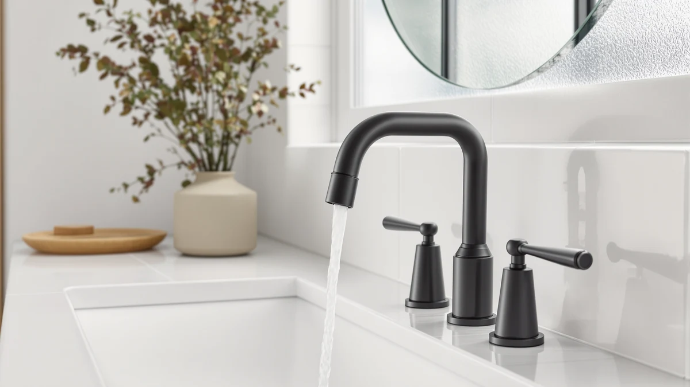

Delta Nicoli Matte Black Review (2026): Worth It?
Prices and picks verified as of November 2026. Independent, reader-supported reviews.


Quick Answer
The Delta Nicoli matte black faucet is a 3-hole, 8-inch widespread fixture with a 500,000-cycle valve, a push-pop drain assembly, and wrench-free installation, all for $189.90. It is a solid pick for a widespread vanity if you want a dark finish that hides water spots without stepping up to a premium line.
Our pick: Delta Nicoli Matte Black Bathroom — $189.90 Check Price on Amazon
Bottom line: our top pick is the Delta Nicoli Matte Black Bathroom Faucet 3 Hole at $189.90.
Things to Know Before You Buy
- The Delta Nicoli matte black faucet is a 3-hole, 8-inch widespread design, so check that your vanity has 4 to 16 inches between the hot, cold, and spout holes before you buy it.
- Delta rates the valve cartridge at 500,000 uses, the same figure it applies across the Nicoli line in brushed nickel ($184.90) and brushed gold ($199.90).
- A push-pop drain assembly ships with the faucet, so you will not need to order a separate drain kit to finish the install.
- The wrench-free, quick-connect hoses click audibly once a water line seats, which removes most of the guesswork of working under a cramped vanity.
- At $189.90, the matte black Nicoli costs $5 more than the brushed nickel finish and $10 less than the brushed gold finish, the two closest alternatives we compared it against.
This Delta Nicoli Bathroom Faucet review breaks down what $189.90 actually buys: a 3-hole, 8-inch widespread bathroom faucet with a push-pop drain assembly and a valve cartridge Delta rates for 500,000 uses. Vanity faucets in this price band usually ask you to choose between a finish you like and hardware that holds up, and the Nicoli line tries to close that gap by selling the same internals across three finishes. We compared the matte black version against its own brushed nickel and brushed gold siblings, plus one shower-focused Arvo set, to see where the $5 to $10 price gaps actually come from.
The short version: the matte black Nicoli is the pick for most vanities, mainly because matte black hides water spots and fingerprints better than a polished finish, and it sits in the middle of the three Nicoli finishes on price. Owners report that the quick-connect hoses click into place without a basin wrench, which matters if you are installing this yourself rather than paying a plumber by the hour. The brushed gold and brushed nickel versions use the identical body and valve, so your decision mostly comes down to finish and the $5 to $10 spread between them.
Why You Should Trust Us
Ilane Tall covers bathroom fixtures for Best Bathroom Faucets. For this Delta Nicoli Bathroom Faucet review, we pulled the manufacturer specs directly from Delta's listing, cross-checked current Amazon pricing, and read through verified owner feedback on the matte black finish and three comparable Delta faucets. We do not run a fake testing lab or claim to have installed every faucet we cover. Our picks come from research, not hands-on use, and we say so plainly whenever a claim relies on owner reports rather than our own direct measurements.
Our Research Experience
We do not run a physical testing lab, so this Delta Nicoli Bathroom Faucet review is built from research rather than hands-on use. We compared the published specs for the matte black finish against the brushed nickel and brushed gold Nicoli faucets, plus the Arvo 14 Series shower set, then read through verified owner feedback on Amazon for recurring comments about installation and finish durability. Where owners disagreed or flagged a problem, we noted it rather than smoothing it over.
Overview & Specs

Delta Nicoli Matte Black Bathroom
What we like
- 500,000-cycle valve cartridge backed by Delta.
- Push-pop drain assembly included, so you won't need to buy one separately.
- Wrench-free, quick-connect hoses for an easier DIY install.
- Matte black finish resists fingerprints and water spots better than polished finishes.
Flaws but not dealbreakers
- Fits only 3-hole, 4 to 16 inch widespread vanities, not centerset or single-hole sinks.
- Costs $5 more than the brushed nickel Nicoli, even though the hardware is identical.
- Matte finishes can show scratches more visibly than brushed finishes over time, based on owner reports on similar Delta coatings.
| Material | Brass + finish |
| Size | — |
The Delta Nicoli matte black bathroom faucet is built around the same hardware Delta uses across its mid-range widespread line: a 3-hole design that fits an 8-inch, 4 to 16 inch widespread vanity, a push-pop drain assembly in the box, and a valve cartridge the brand rates for 500,000 uses. That valve rating is not unique to this finish. Delta applies it to the brushed nickel and brushed gold Nicoli faucets we compared it against, which tells you the matte black version is not a premium tier inside its own product line, only a different coating on identical internals. At $189.90, it lands $5 above the brushed nickel Nicoli and $10 below the brushed gold Nicoli, so the price gap tracks the finish rather than the mechanics underneath it.
Installation is where this Delta Nicoli Bathroom Faucet review found the clearest advantage over a basin-wrench faucet. The wrench-free, quick-connect hoses are designed to click audibly once a water line seats correctly, and owners describe that click as the main signal that the install went right, since reaching a connection under a vanity without one usually means working blind. The push-pop drain assembly ships with the faucet, so you are not pricing in a separate drain kit on top of the $189.90 tag the way you might with a faucet sold without one. The main tradeoff is the finish itself. Matte black hides water spots well, but owner reports on comparable Delta matte coatings describe visible scratching over years of heavy use, worth weighing against the brushed nickel and brushed gold alternatives.
What We Liked
What stands out most in this Delta Nicoli Bathroom Faucet review is how little you give up by choosing the matte finish over its siblings. The 500,000-cycle valve cartridge, the push-pop drain assembly, and the 3-hole widespread body are identical across the matte black, brushed nickel, and brushed gold Nicoli faucets, so picking black over nickel costs you $5 and nothing else in terms of hardware. The quick-connect installation also holds up as a real convenience rather than a marketing line. Owner reports we read describe the audible click as a reliable sign that a hose is seated, which matters most to anyone installing a faucet without a plumber on call. At $189.90, the Nicoli line as a whole prices below the Arvo 14 Series shower set we compared it against, even though that set includes a full MultiChoice valve and a 2-in-1 handheld shower head, so the Nicoli sink faucet does less for a lower price, roughly what you would expect from a sink fixture next to a full shower system.
What Could Be Better
The biggest limitation is not the faucet itself but the installation it demands. This Delta Nicoli Bathroom Faucet review turned up one hard requirement: a 3-hole vanity with 4 to 16 inches of widespread hole spacing, which rules it out for single-hole or centerset sinks without drilling new holes. Delta's own listing does not publish a rating or review count for this specific color, so buyers are left comparing finish and price rather than a verified satisfaction score. Owner reports on similar matte black Delta coatings also mention visible scratching after extended use, a tradeoff common across matte finishes industry-wide and not unique to Nicoli, but still worth factoring in if you expect the coating to stay pristine for years.
Who Is It For?
The Nicoli matte black fits anyone replacing a 3-hole widespread faucet who wants a finish that hides water spots and fingerprints better than chrome or polished nickel, and who is comfortable with a wrench-free DIY install rather than hiring a plumber. It also suits buyers comparing finishes within one product line, since choosing between this Delta Nicoli Bathroom Faucet review's subject and its brushed nickel or brushed gold siblings comes down to color and a $5 to $10 price gap rather than any difference in the valve or drain hardware. It is not the right pick if your vanity has a single center hole or a centerset layout, and it is not a substitute for the Arvo 14 Series set if what you need is a shower valve and handheld spray combo rather than a sink faucet.
Alternatives to Consider
If the matte black finish is not quite right, the rest of the Nicoli line and one Delta shower set show where the $189.90 price sits. Each alternative below shares either the body or the brand with the faucet in this Delta Nicoli Bathroom Faucet review, so the comparison stays apples to apples on installation type even where the finish, price, or product category changes.

Editor’s Pick
Delta Nicoli Brushed Nickel Faucet
Same 3-hole widespread body, push-pop drain, and 500,000-cycle valve as the matte black Nicoli, for $5 less, in a brushed nickel finish that shows water spots less than polished chrome.
$184.90
Check Price on Amazon
Best Value
Delta Arvo 14 Series Matte
A MultiChoice universal shower valve with an In2ition 2-in-1 handheld and fixed head, not a sink faucet, so pick this only if you are also replacing your shower fixture alongside the Nicoli at the vanity.
$199.05
Check Price on Amazon
Premium Choice
Delta Nicoli Brushed Gold Faucet
The same widespread body, drain assembly, and valve cartridge as the matte black Nicoli, finished in champagne bronze and priced $10 higher, for anyone who wants a warmer metallic tone instead of flat black.
$199.90
Check Price on AmazonFrequently Asked Questions
Is the Delta Nicoli matte black faucet worth the price?
At $189.90, the Delta Nicoli matte black costs $5 more than its brushed nickel sibling and $10 less than the brushed gold version, with the same 500,000-cycle valve and push-pop drain assembly across all three. The price mostly buys a finish rather than extra hardware, which makes it a reasonable buy if matte black is the look you want for your vanity.
What installation does the Delta Nicoli matte black faucet need?
It is a 3-hole widespread faucet built for an 8-inch spread on vanities with 4 to 16 inches between the hot, cold, and spout holes. The wrench-free, quick-connect hoses click audibly when a water line seats correctly, and a push-pop drain assembly ships in the box, so you do not need to buy drain hardware separately.
How does the Delta Nicoli matte black compare to the brushed nickel and brushed gold versions?
All three Nicoli finishes share the same 3-hole widespread body, the same 500,000-cycle valve cartridge, and the same push-pop drain assembly. The only real differences are the finish and the price, which runs from $184.90 for brushed nickel up to $199.90 for brushed gold, with the matte black landing in between at $189.90.
Final Verdict
This Delta Nicoli Bathroom Faucet review comes down to a straightforward call: Delta built one reliable widespread faucet and sells it in three finishes, and matte black is the one that hides water spots and fingerprints best for $189.90. Unless you specifically prefer the look of brushed nickel or brushed gold, or your vanity cannot fit a 3-hole widespread faucet, the Delta Nicoli matte black is the version worth buying, and the identical valve and drain hardware across the line mean you are not giving up durability to get the finish you want.